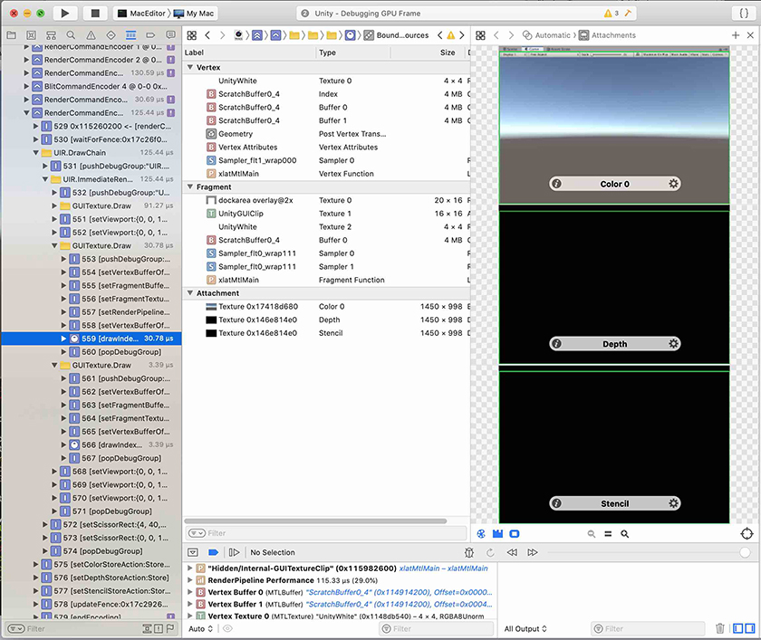

Xcode has a frame debugger tool that lets you capture a frame of your application and see the commands that the GPU performs during that frame, examine data in GPU memory, and identify bottlenecks in your shadersA small script that contains the mathematical calculations and algorithms for calculating the Color of each pixel rendered, based on the lighting input and the Material configuration. More info See in Glossary. This allows you to analyze GPU performance.

Captured frame in Xcode
Unity integrates with the Xcode frame debugger in these ways:
On macOS, iOSApple’s mobile operating system. More info See in Glossary, and tvOS, you can use Xcode frame debugger to analyze frames from your application while it is running on the target device.
On macOS, you can use Xcode frame debugger to analyze frames from the Unity Editor.
Frame debugging only works if the application is running on a platform and graphics API that Xcode supports. As of Unity 2019.2, Xcode only supports macOS with Metal graphics. If Unity uses another API, the Xcode integration is disabled until you select a supported graphics API.
Capturing a frame from your application with Xcode
This section describes how to launch your application and perform a frame capture using the Xcode UI(User Interface) Allows a user to interact with your application. More info See in Glossary.
This workflow is supported on all platforms that use Metal.
Create an Xcode project.
The easiest way to do this is to build an Xcode project from the Unity Editor:
Open the Build Settings window (File > Build Settings).
macOS only: Enable Create Xcode Project.
Click Build.
Alternatively, you can use any other Xcode project to launch macOS applications. To do this:
In Xcode, create a new, empty macOS project, or open an existing macOS project.
Go to Product > Scheme > Edit scheme, and open the Info tab.
Set Executable to your built Unity application.
Edit the Xcode project scheme so that you can perform frame captures.
The easiest way to do this is using the Xcode GUI:
Follow the Enabling Frame Capture guide in the Xcode documentation to set your project scheme’s GPU Frame Capture setting to Metal.
You can also configure an Xcode project scheme using the XcScheme API, which can be useful for automated builds. For more information, see the XcScheme API documentation.
Launch your project from Xcode.
At an appropriate point, perform a frame capture.
The easiest way to do this is using the Xcode UI:
In Xcode, press the Frame Capture button (camera icon) to capture the next frame of data.
You can also perform a frame capture from a script, using the FrameCapture API. For more information, see the FrameCapture API documentation.
This section describes how to launch the Unity Editor from Xcode and perform a frame capture using the Unity Editor UI or the Xcode UI. You can analyze the frame capture immediately, or save the results to disk.
This workflow is supported on macOS.
If the Unity Editor is open, close it.
In Xcode, create a new, empty macOS project, or open an existing macOS project.
Go to Product > Scheme > Edit scheme, and open the Info tab.
The easiest way to do this is using the Unity Editor UI:
In the Unity Editor, use the Xcode Capture button to the right of the SceneA Scene contains the environments and menus of your game. Think of each unique Scene file as a unique level. In each Scene, you place your environments, obstacles, and decorations, essentially designing and building your game in pieces. More info See in Glossary view or Game view to perform a frame capture.
Alternatively, you can use the Xcode UI:
In Xcode, press the Frame Capture button (camera icon) to capture the next frame of data.